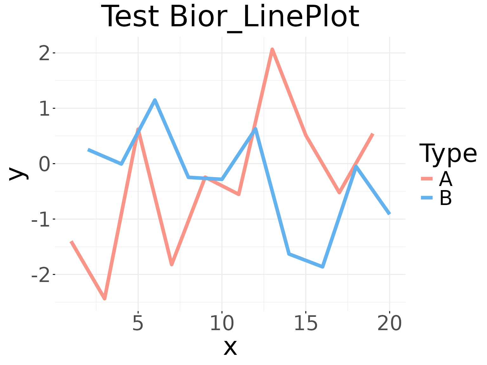
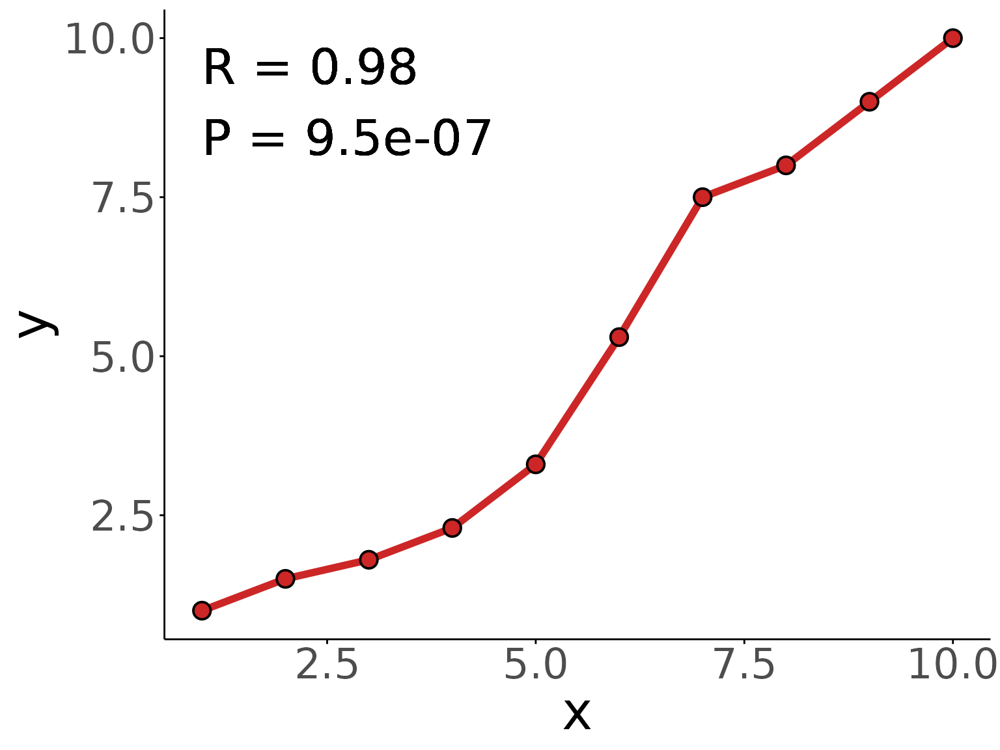
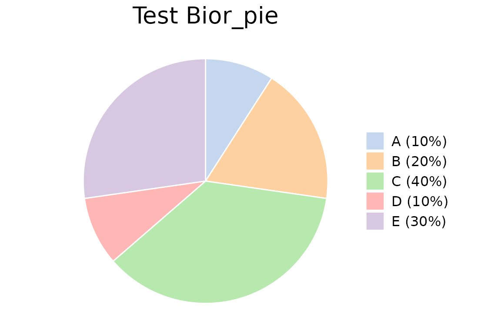
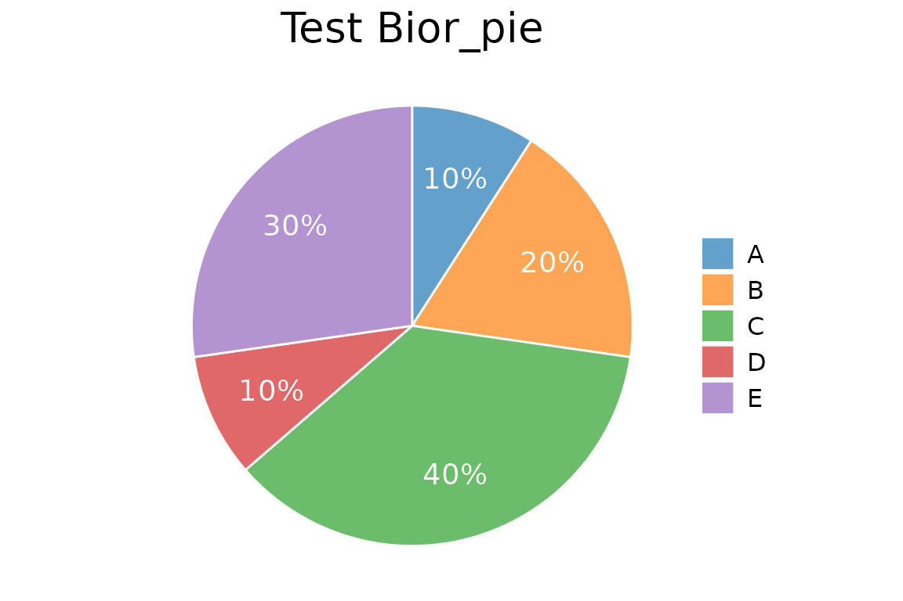
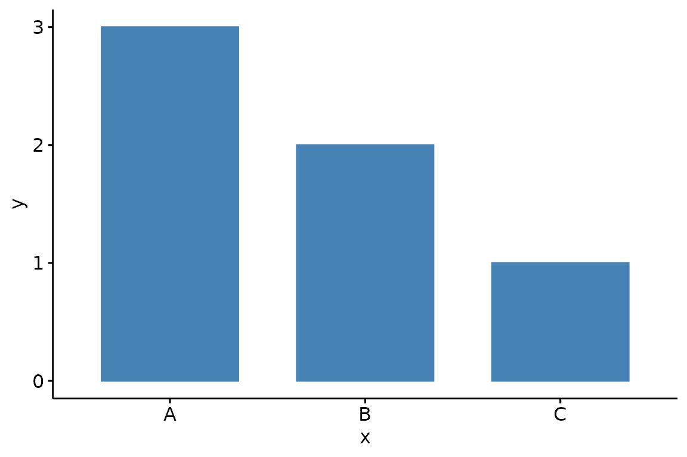

General_Plots.RmdLine plot use line segments to connect data points to show data trends. Each data point represents a specific time point or value, and the line segments reflect the relationship between data points. Line plot are usually used to display time series data, trend analysis, cyclical changes, etc.
In Biorplot package, we use the
Bior_LinePlot() function to draw a line plot.
Draw a basic line plot with different type:
data <- data.frame('x' = c(1:20), 'y' = rnorm(20), 'Type' = rep(c('A','B'), 10))
palette <- c("#f89588","#63b2ee")
Bior_LinePlot(data, x = "x", y = "y", color = "Type", title = "Test Bior_LinePlot",
palette = palette, plot_type = "l", size = 2, text.size = 30,
ggtheme = theme_minimal()) +
font("title", size = 35)
Draw a line plot with correlation coefficient R and P-value:
data <- data.frame('x' = c(1:10), 'y' = c(1,1.5,1.8,2.3,3.3,5.3,7.5,8,9,10))
Bior_LinePlot(data, x = "x", y = "y",
color = "firebrick3", plot_type = "l", size = 2,
cor.test = TRUE, cor.label.x=1, cor.label.y=9, R.digits = 2, P.digits = 2,
cor.label.size = 10,
text.size = 30, ggtheme = theme_classic()) +
geom_point(color="black", fill="firebrick3", shape=21, size=4, stroke=1) +
font("title", size = 30)
Pie plot are often used to show the relative proportions of data. Based on a circular pattern, it divides the data into different sectors, and the size of each sector represents the relative size of the corresponding data. Pie plot can intuitively show the proportional relationship between different data, helping observers quickly understand the data distribution.
In Biorplot package, we use the
Bior_PiePlot() function to draw a Pie plot.
Draw a basic pie plot with different type:
value <- c(0.1,0.2,0.4,0.1,0.3)
type <- c("A (10%)", "B (20%)", "C (40%)", "D (10%)", "E (30%)")
col <- c("#AEC7E8B2", "#FFBB78B2", "#98DF8AB2", "#FF9896B2", "#C5B0D5B2")
Bior_PiePlot(value=value, type=type, col=col, title="Test Bior_pie")
Draw a pie plot with text labels
value <- c(0.1,0.2,0.4,0.1,0.3)
type <- c("A", "B", "C", "D", "E")
label <- c("10%","20%","40%","10%","30%")
col <- c("#1F77B4B2", "#FF7F0EB2", "#2CA02CB2", "#D62728B2", "#9467BDB2")
Bior_PiePlot(value=value, type=type, label=label, col=col, title="Test Bior_pie", label.x=1.2, label.color="white", label.size=5)
Bar plot is usually used to compare two or more values (at different times or under different conditions) using the length of the rectangle as a variable. It is usually used for analyzing smaller data sets.
In Biorplot package, we use the
Bior_BarPlot() function to draw a Bar plot.
Draw a basic bar plot:
df <- data.frame(
x = c("A", "B", "C"),
y = c(3, 2, 1))
Bior_BarPlot(df, "x", "y", fill = "steelblue", color = "steelblue")
Draw a stacked bar plot and add text label:
df <- data.frame(
x = rep(c('sample1','sample2','sample3','sample4'), each=2),
y = c(20,16,29,16,14,11,22,21),
type = rep(c('gene1','gene2'), 4),
label = c(20,16,29,16,14,11,"","")
)
col <- c("#AEC7E8FF","#FFBB78FF")
Bior_BarPlot(df, "x", "y", fill = "type", color = "type", label = df$label,
palette = col, lab.pos = "in") +
theme(legend.position = "right", legend.key.size=unit(1, "cm"))Change position: Interleaved (dodged) bar plot:
Bior_BarPlot(df, "x", "y", fill = "type", color = "type", palette = col,
label = TRUE, position = position_dodge(0.9))Dot plot is usually used to displays multidimensional data in two-dimensional graphics. It plots data points in a plane coordinate system, with each data point represented by a circle. The size of the circle is usually related to the value of a certain dimension. Through the dot plot, we can easily observe the distribution of data points in various dimensions.
In Biorplot package, we use the
Bior_DotPlot() function to draw a Dot plot.
Draw a basic dot plot:
df <- data.frame(
Sample = rep(paste('sample', 1:5, sep=''), 4),
Gene = rep(paste('gene', 1:4, sep=''), 5),
size = round(rnorm(20, mean = 10, sd = 5))
)
colour <- c("#1F77B4FF","#FF7F0EFF","#2CA02CFF","#D62728FF","#9467BDFF")
Bior_DotPlot(data = df, x = "Sample", y = "Gene", size = "size", color = "Gene",
x.text.col = FALSE, ggtheme = theme_bw()) +
theme(axis.text.x = element_text(angle = 0, hjust = 0.5))Draw an expression dot plot:
df <- data.frame(
Sample = rep(paste('sample', 1:4, sep=''), each=4),
Gene = rep(paste('gene', 1:4, sep=''), 4),
Pct = c(80,10,10,10,10,80,10,10,10,10,80,10,10,10,10,80),
Expression = c(3,0.5,0.1,0.3,0.3,3,0.2,0.6,0.1,0.7,3,0.1,0.5,0.2,0.1,3)
)
Bior_DotPlot(data = df, x = "Sample", y = "Gene", size="Pct", color = "Expression",
x.text.col = FALSE, ggtheme = theme_bw()) +
theme(axis.text.x = element_text(angle = 0, hjust = 0.5)) +
scale_color_gradientn(colours = c("lightblue3", "lightblue", "white", "red", "red4"))Sankey plot is a specific type of flowchart in which the width of the branches extending in the diagram corresponds to the size of the data flow, and is more suitable for visual analysis of data such as user flow.
In Biorplot package, we use the
Bior_SankeyPlot() function to draw a Sankey plot.
Draw a basic sankey plot:
links <- data.frame(
Source=c("C","A", "B", "E", "D"),
Target=c("b","c", "a", "e", "d"),
Value=c(1, 2, 1, 4, 5)
)
nodes <- data.frame(
name = c("A", "B", "C", "D", "E", "a", "b", "c", "d", "e")
)
links$IDsource <- match(links$Source, nodes$name) -1
links$IDtarget <- match(links$Target, nodes$name) -1
Nodes.colour <- c("#1F77B4B2","#FF7F0EB2","#2CA02CB2","#D62728B2","#9467BDB2",
"#8C564BB2","#E377C2B2","#7F7F7FB2","#BCBD22B2","#17BECFB2")
p <- Bior_SankeyPlot(links, nodes, Nodes.colour=Nodes.colour, Nodes.order = nodes$name,
fontSize=20,iterations=0)
p
# save plot
# saveNetwork(p,"sankey.html")
# webshot("sankey.html", "sankey.pdf")Draw a multi-layer Sankey plot and customize the colors:
links <- data.frame(
Source = c(rep(c("A_1","B_1","C_1","D_1"),each=4), rep(c("A_2","B_2","C_2","D_2"),each=4)),
Target = c(rep(c("A_2","B_2","C_2","D_2"),4), rep(c("A_3","B_3","C_3","D_3"),4)),
Value = c(0.4,0.4,0.1,0.1, 0.1,0.8,0.05,0.05, 0.05,0.05,0.8,0.1, 0.05,0.1,0.05,0.8,
0.4,0.4,0.1,0.1, 0.1,0.8,0.05,0.05, 0.05,0.05,0.8,0.1, 0.05,0.1,0.05,0.8)
)
links$Group <- ""
links$Group[which(links$Value > 0.5)] <- "Type1"
links$Group[which(links$Value > 0.1 & links$Value <= 0.5)] <- "Type2"
links$Group[which(links$Value <= 0.1)] <- "Type3"
nodes <- data.frame(
name = c("A_1","B_1","C_1","D_1","A_2","B_2","C_2","D_2","A_3","B_3","C_3","D_3")
)
links$IDsource <- match(links$Source, nodes$name) - 1
links$IDtarget <- match(links$Target, nodes$name) - 1
Group.order <- c("Type1", "Type2", "Type3")
Group.colour <- c("#6860ff","#e489dc","#d0d5da")
Nodes.order <- nodes$name
Nodes.colour <- rep(c('#ffda11', '#f68d45', '#26d5ff', '#f05a9e'),3)
Bior_SankeyPlot(
Links = links, Nodes = nodes, Source = "IDsource", Target = "IDtarget",
Value = "Value", NodeID = "name", colourScale = colourScale, LinkGroup="Group",
fontSize = 20, iterations=0,
Group.order = Group.order, Group.colour = Group.colour,
Nodes.order = Nodes.order, Nodes.colour = Nodes.colour)